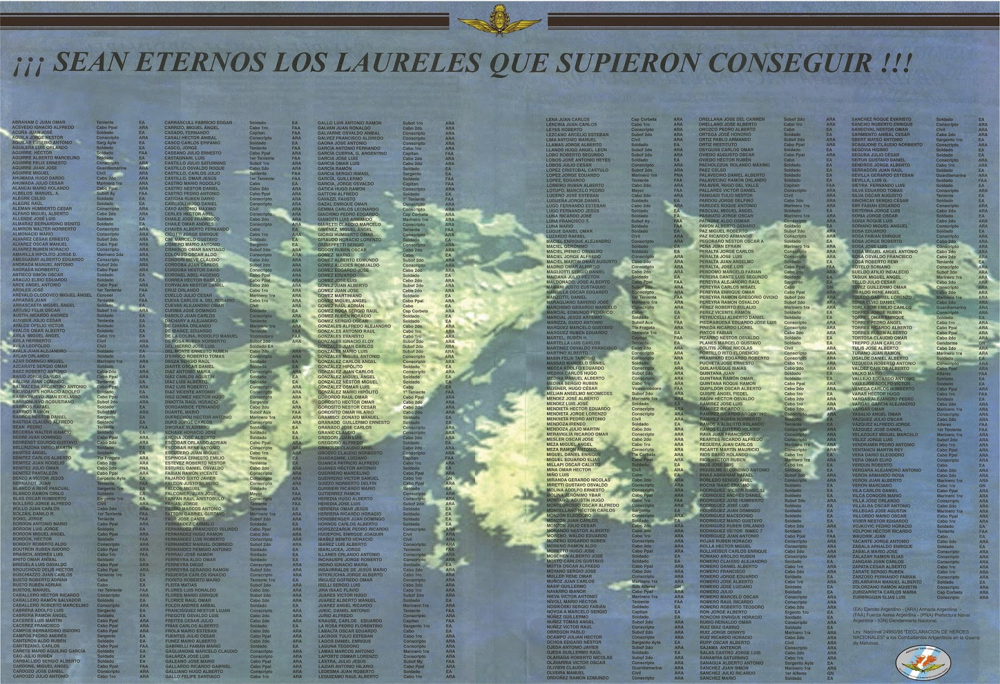
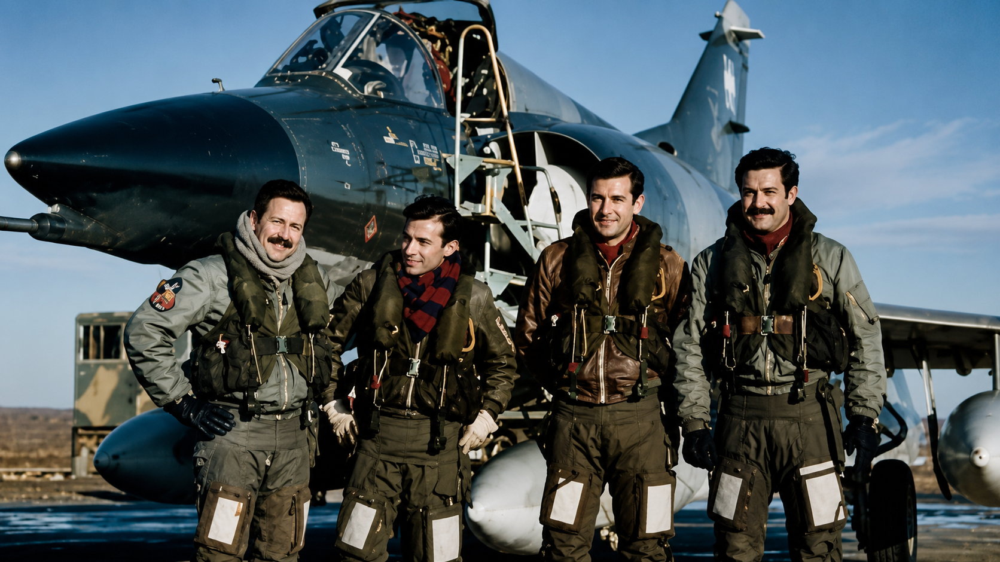

Obra Literaria e Histórica
Testimonio de una Trilogía – Guerra de Malvinas
Obra editada por la Escuela Superior de Guerra Aérea (ESGA) en conmemoración del 40° Aniversario de la Gesta de Malvinas[cite: 228]. Relata las vivencias del personal técnico y el rol fundamental de la Trilogía Operativa (Avión, Piloto y Personal de Tierra)[cite: 228].
Honor y Gloria a Nuestros Héroes
Homenaje permanente a los caídos en defensa de la Patria y registros especiales de la memoria histórica[cite: 275].
"Las Malvinas fueron, son y serán argentinas"[cite: 275].
Hablar de Malvinas es hablar de personas. De hombres que tuvieron un nombre, una familia, una historia, sueños y proyectos de vida, y de 649 argentinos que nunca regresaron[cite: 276].
El Congreso de la Nación, mediante la Ley Nacional N.º 24.950 (sancionada el 18 de marzo de 1998), declaró "Héroes nacionales" a los combatientes argentinos fallecidos durante la guerra de Malvinas de 1982[cite: 276]. Su artículo 2.º incorpora la nómina oficial para que sus nombres perduren en la memoria y conciencia histórica de las generaciones venideras[cite: 276].
Este espacio no es solamente para recordar; es para conocer sus nombres, sus historias y asegurar que sigan siempre vivos en nuestra memoria[cite: 276, 277].
- 🎖️ Ver Dossier Completo: Los 649 Héroes Nacionales (PDF)[cite: 275]
- 🔗 Texto oficial de la Ley Nacional 24.950 (Argentina.gob.ar)[cite: 276]

Trabajos de Investigación
Documentos y análisis detallados sobre las operaciones, el despliegue y la historia táctica de la Fuerza Aérea Sur.
Antecedentes y Documentos Históricos (PDF)
- 📄 Autonomía y Tensión Interfuerzas
- 📄 Biografía del Brigadier Crespo y Fuerza Aérea Sur
- 📄 Dossier Táctico FAS 1982
- 📄 Declaración de Crespo y Panorama
- 📄 FAS: Comando Independiente
- 📄 Distribución de Medios de la Fuerza Aérea Sur
- 📄 Informe de Análisis Estratégico FAS
- 📄 Informe Técnico de la Trilogía Operativa
- 📄 La Fuerza Aérea Sur
Dossier Educativo - Malvinas en las Aulas
Material pedagógico, guías de investigación y divulgación para escuelas primarias y secundarias[cite: 224, 249].
Galería Fotográfica e Imágenes Históricas
Registros fotográficos, afiches de la Trilogía y documentos originales de la BAM San Julián.

